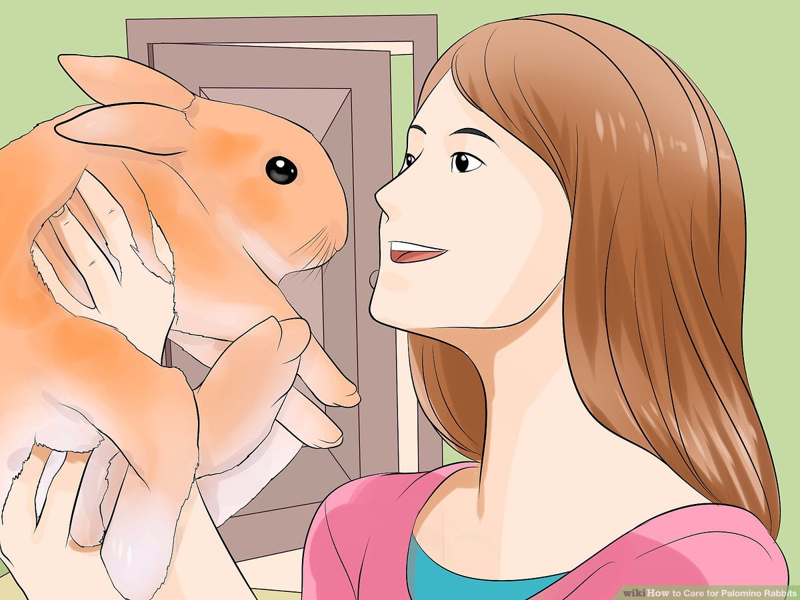

i wish this rabbit was a pal o mine!actually I kinda have a bias against orangey type fur animals, idk i just dont think that they are all that cute. unless you have an orange pet, then actually I love orange pets, don't worry this is all just a huge joke i'm telling hahahahahahah ok